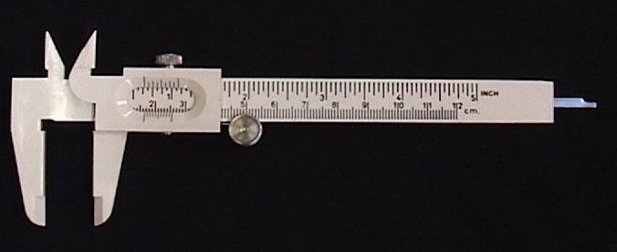
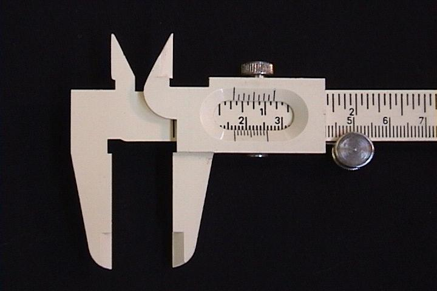
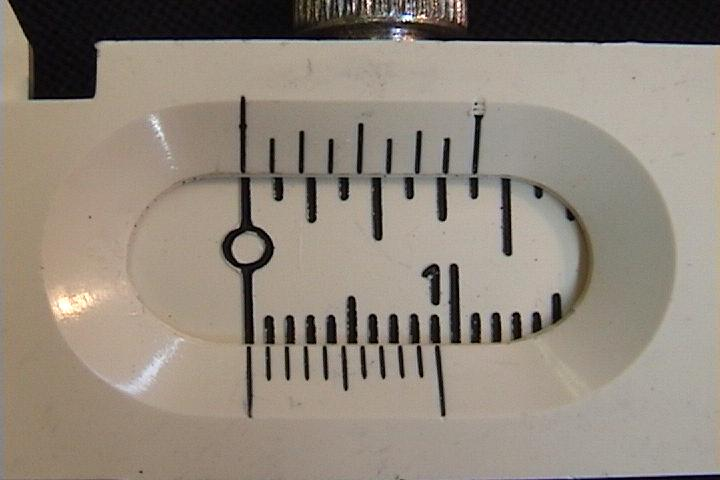
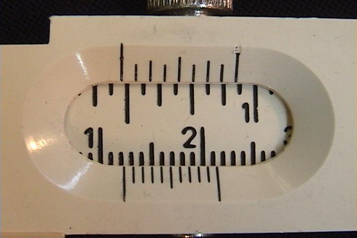

|
|

|
CUPOL: How to use the vernier caliper
|
i
CUPOL Home
 
What do these icons mean?
Play all the videos now. [6:09, 80.5 Mb]
Using a vernier caliper
Figure 1.

[Click on image to see the labels and enlarge it.]
A vernier caliper (or vernier)
is a common tool used in laboratories and industries to accurately
determine the fraction part of the least count division.
The vernier is a convenient tool to use when measuring the length
of an object, the outer diameter (OD) of a round or cylindrical
object, the inner diameter (ID) of a pipe, and the depth of a hole.
To see short videos showing how to use the vernier to measure these
various dimensions, click on the links below.
Adjusting the vernier's auxiliary scale. [0:34, 8.5 Mb]
Measuring the length of an object. [0:17, 4.6 Mb]
Measuring the outer diameter of a round object. [0:40, 9.7 Mb]
Measuring the inner diameter of a hollow cylinder. [0:25, 6.4 Mb]
Measuring the depth of a hole. [0:44, 10.7 Mb]
How the vernier works
Figure 2.

[Click on image to enlarge it.]
The vernier consists of a main scale engraved on a fixed ruler
and an auxiliary vernier scale engraved on a movable jaw
(see Figures 1 and 2). The movable auxiliary scale is free to
slide along the length of the fixed ruler. This vernier's
main scale is calibrated in centimeters with the smallest
division in millimeters. The auxiliary scale has 10 divisions
that cover the same distance as 9 divisions on the main scale.
Therefore, the length of the auxiliary scale is 9.0 mm.
Zeroing the vernier
Figure 3.

[Click on image to enlarge it.]
When
the vernier is closed and properly zeroed (compare Figure 5), the
first mark (zero) on the main scale is aligned with the first
mark on the auxiliary scale. The last mark on the auxiliary scale
will then coincide with the 9 mm-mark on the main scale. This is
read 0.00 cm.
Reading the vernier caliper
Figure 4.

[Click on image to enlarge it.]
Once the vernier is positioned to make a reading, make a note
of where the first mark on the auxiliary scale falls on the
main scale. In Figure 4, we see that the object's length is
between 1.2 cm and 1.3 cm because the first auxiliary mark is
between these two values on the main scale. The last digit (tenths
of a millimeter) is found by noting which line on the auxiliary scale
coincides with a mark on the main scale. In our example, the last
digit is 3 because the third auxiliary mark lines up with a mark
on the main scale. Therefore, the length of the object is 1.23 cm.
Reading the vernier. [0:51, 22.3 Mb]
Self Study: Determine the length of an aluminum
block. [1:00, 13.8 Mb]
Self Study: Determine the radius of a sphere. [0:50, 10.8 Mb]
An improperly zeroed vernier caliper
Figure 5.

[Click on image to enlarge it.]
Care must be taken to insure that the vernier caliper is properly
zeroed (see Figure 3). (With misuse, it is possible that the
vernier will not read zero when the jaws are closed, thus leading
to systematic errors.) The vernier in Figure 5 is improperly
zeroed. To correct this, a zero correction must be made. A
correction may be either positive or negative. If the first
mark on the auxiliary scale lies to the right of the main scale,
then the reading is too large and the error is positive. The zero
reading in Figure 5 is +0.05 cm and should be subtracted from any
measurement reading. Similarly, if the first mark on the auxiliary
scale lies to the left of the main scale zero-mark, then the error
is negative and the correction should be added from the measurement
reading.
Play all the videos now. [6:09, 80.5 Mb]
If you have a question or comment, send an e-mail to Lab Coordinator:
(contact details removed)
CUPOL Home
|
|